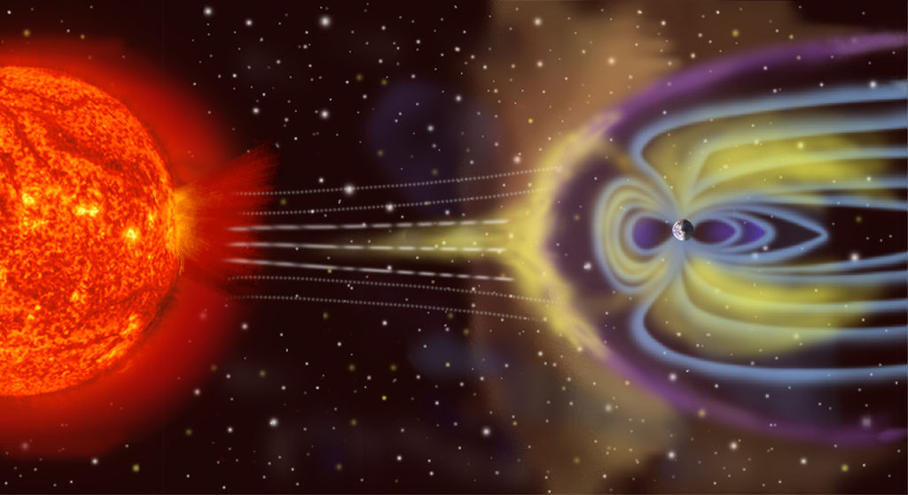
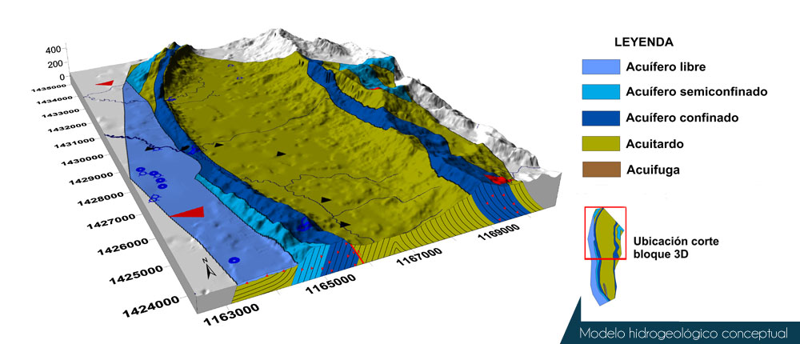

ESPECIALIDADES
GEOFISICA
La geofísica es la ciencia que se encarga del estudio de la Tierra desde el punto de vista de la física. Su objeto de estudio abarca todos los fenómenos relacionados con la estructura, condiciones físicas e historia evolutiva de la Tierra. Al ser una disciplina principalmente experimental, usa para su estudio métodos cuantitativos físicos como la física de reflexión y refracción de ondas mecánicas, y una serie de métodos basados en la medida de la gravedad, de campos electromagnéticos, magnéticos o eléctricos y de fenómenos radiactivos. En algunos casos dichos métodos aprovechan campos o fenómenos naturales (gravedad, magnetismo terrestre, mareas, terremotos, tsunamis, etc.) y en otros son inducidos por el hombre (campos eléctricos y fenómenos sísmicos).
Dentro de la geofísica se distinguen dos grandes ramas: La geofísica interna y la geofísica externa.
La geofísica interna analiza el interior de la Tierra y las principales cuestiones que estudia son:
Sismología, estudia la estructura interna de la Tierra, el movimiento de las placas tectónicas y los movimientos telúricos, entre otros, valiéndose principalmente del análisis sismogramas que registran la propagación de ondas elásticas (sísmicas) y de observaciones GPS que registran el movimiento de las placas tectónicas.
Geotermometría, estudia procesos relacionados con la propagación de calor en el interior de la Tierra, particularmente los relacionados con desintegraciones radioactivas y vulcanismo.
Geodinámica, la interacción de esfuerzos y deformaciones en la Tierra que causan movimiento del manto y de la litosfera.
Prospección geofísica, usa métodos cuantitativos para la localización de recursos naturales como petróleo, agua, yacimientos de minerales, cuevas, etc o artificiales como yacimientos arqueológicos.
Ingeniería geofísica o geotecnia, usa métodos cuantitativos de prospección para la ubicación de yacimientos de minerales e hidrocarburos, así como para las obras públicas y construcción en general.
Tectonofísica, estudia los procesos tectónicos.
Vulcanología, Es el estudio de los volcanes, la lava, el magma y otros fenómenos geológicos relacionados.
La geofísica externa estudia las propiedades físicas del entorno terrestre.

Geomagnetismo, estudia el campo magnético terrestre, tanto el interno generado por la propia Tierra como el externo, inducido por la Tierra y por el viento solar en la ionosfera.
Paleomagnetismo, se ocupa del estudio del campo magnético terrestre en épocas anteriores del planeta.
Gravimetría, estudia el campo gravitatorio terrestre a través de observaciones en tierra y observaciones satelitales.
Oceanografía u Oceanología, estudia el océano en todas sus escalas. Desde fenómenos locales, hasta fenómenos globales como El Niño.
Meteorología, estudia la atmósfera y el tiempo atmosférico, circunscribiéndose a la Tropósfera.
Aeronomía, es la ciencia que estudia las capas superiores de la atmósfera, donde los fenómenos de ionización y disociación son importantes, desde el punto de vista físico y químico.
Climatología, estudia el clima terrestre actual y en el pasado geológico.
Geofísica Espacial, estudia los procesos físicos ligados al plasma presente en la ionosfera y la magnetósfera, y su interacción con el viento solar. La geofísica espacial es principalmente reconocida por el estudio de la transferencia de energía en la magnetósfera que da origen a las auroras polares.
PETROGRAFIA
La petrografía es la rama de la geología que se ocupa del estudio e investigación de las rocas, en especial en cuanto respecta a su aspecto descriptivo, su composición mineralógica y su estructura. Se complementa así con la petrología, disciplina que se centra principalmente en la naturaleza y origen de las rocas.
HIDROGEOLOGIA
La hidrogeología es una rama de las ciencias geológicas (dentro de la Geodinámica Externa), que estudia las aguas subterráneas en lo relacionado con su circulación, sus condicionamientos geológicos y su captación, así su definición dice «La hidrogeología es la ciencia que estudia el origen y la formación de las aguas subterráneas, las formas de yacimiento, su difusión, movimiento, régimen y reservas, su interacción con los suelos y rocas, su estado (líquido, sólido y gaseoso) y propiedades (físicas, químicas, bacteriológicas y radiactivas); así como las condiciones que determinan las medidas de su aprovechamiento, regulación y evacuación» (Mijailov, L. 1985. Hidrogeología. Editorial Mir. Moscú, Rusia. 285 p)
Actualmente los estudios hidrogeológicos son de especial interés no solo para la provisión de agua a la población sino también para entender el ciclo vital de ciertos elementos químicos, como así también para evaluar el ciclo de las sustancias contaminantes, su movilidad, dispersión y la manera en que afectan al medio ambiente, por lo que esta especialidad se ha convertido en una ciencia básica para la evaluación de sistemas ambientales complejos. El abordaje de las cuestiones hidrogeológicas abarcan: la evaluación de las condiciones climáticas de una región, su régimen pluviométrico, la composición química del agua, las características de las rocas como permeabilidad, porosidad, fisuración, su composición química, los rasgos geológicos y geotectónicos, es así que la investigación hidrogeológica implica, entre otras, tres temáticas principales:
El estudio de las relaciones entre la geología y las aguas subterráneas.
El estudio de los procesos que rigen los movimientos de las aguas subterráneas en el interior de las rocas y de los sedimentos.
El estudio de la química de las aguas subterráneas (hidroquímica e hidrogeoquímica).

Noticias Geologicas

Noticias Geologicas
Departamento de geocicias Universidad Nacional de Colombia